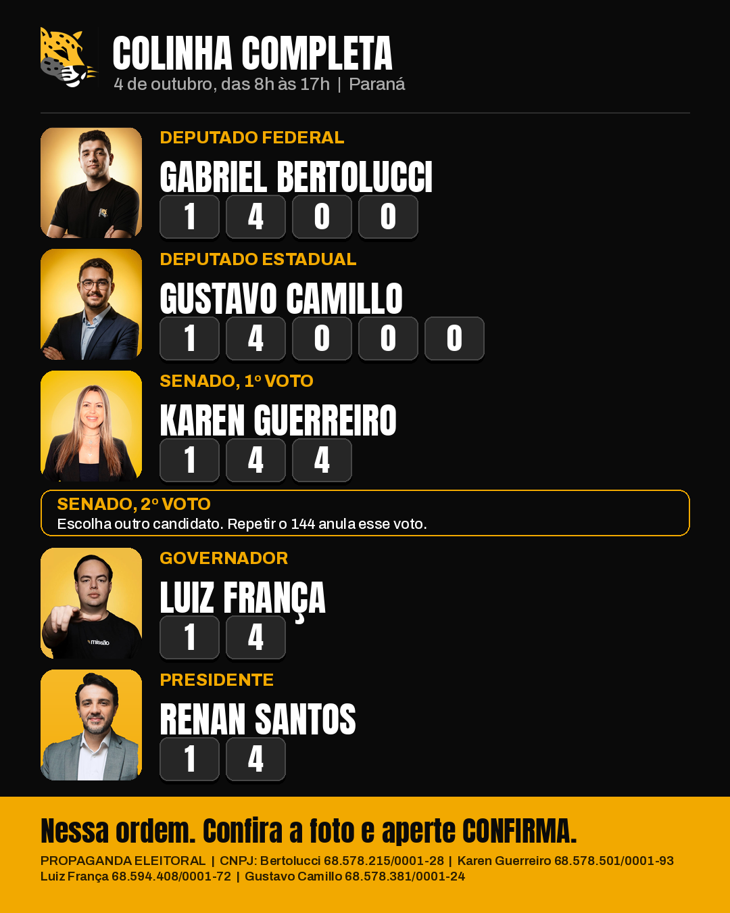

Por que 1400?
Economista especializado em finanças públicas, de Londrina, um dos fundadores do Partido Missão no Paraná.
- Fiscaliza antes mesmo de ter cargo.Lidera auditorias independentes nas contas de municípios paranaenses para expor desperdício.
- Já tem resultado pra mostrar.Barrou a compra de carro de luxo e o aumento de salário de vereadores, sem mandato e sem vantagem pessoal.
- Pacote Anti-PCC.Mais tempo de pena em regime fechado, fim do salário de preso, super presídio em Pitanga e CPI dos Portos.
- Bolso Forte.Menos imposto sobre o consumo, fim da farra dos supersalários e uma máquina pública mais enxuta.
- Prefeitos na Linha.Limite para gasto com show quando a cidade não cumpre as metas de saúde, educação e saneamento.
E pra deputado estadual?
Bertolucci faz dobrada com dois nomes. Na urna você vota em um só: escolha o seu.
Deputado estadual
Gustavo Camillo
14000
- Denúncia que vira resultado.Jornalista, 22 anos e sem cargo: em Pinhais, sua denúncia ao Ministério Público levou à exoneração de um secretário condenado na Justiça.
- De olho no dinheiro público.Em Guaratuba, levou ao MP gastos milionários com shows possivelmente superfaturados.
- Segurança com estratégia.Isolar os líderes de facções dentro dos presídios para cortar o comando do crime nas ruas.
Deputada estadual
Mari Mazzon
14444
- Linha de frente, não discurso.Fundadora do Instituto SOS 4 Patas Paraná, referência em resgate de animais vítimas de maus-tratos.
- Fundo Estadual de Bem-Estar Animal.Para que o cuidado com os animais deixe de depender só de voluntário.
- Conselho Tutelar Animal.Resposta rápida e efetiva aos casos de maus-tratos e abandono.
Na urna, nesta ordem
- 1º Deputado federalGabriel Bertolucci1400
- 2º Deputado estadualGustavo Camillo14000
- 3º Senado, 1º votoKaren Guerreiro144
- 4º Senado, 2º votoEscolha outro candidato. Repetir o 144 anula esse voto.?
- 5º GovernadorLuiz França14
- 6º PresidenteRenan Santos14
Digite o número, confira a foto na tela e aperte CONFIRMA. Votação no dia 4 de outubro, das 8h às 17h.
Leve e passe adiante
A colinha completa, com todos os votos da Missão na ordem da urna. Salve no celular e mande pra quem ainda não decidiu.

{kind=link}
{kind=link}